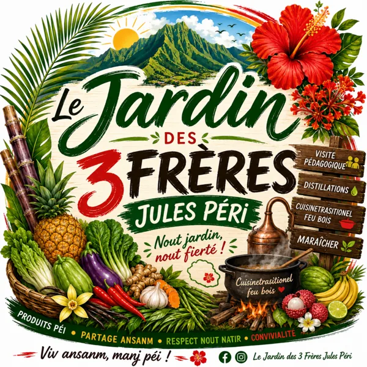
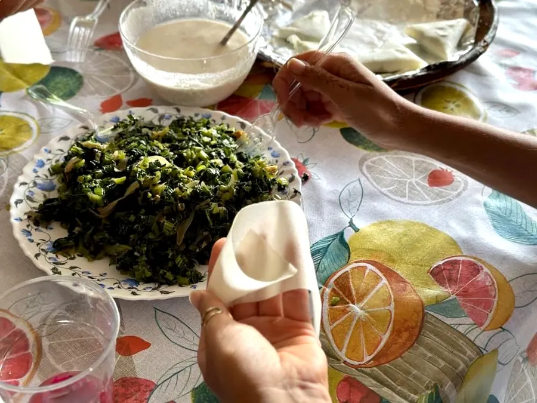
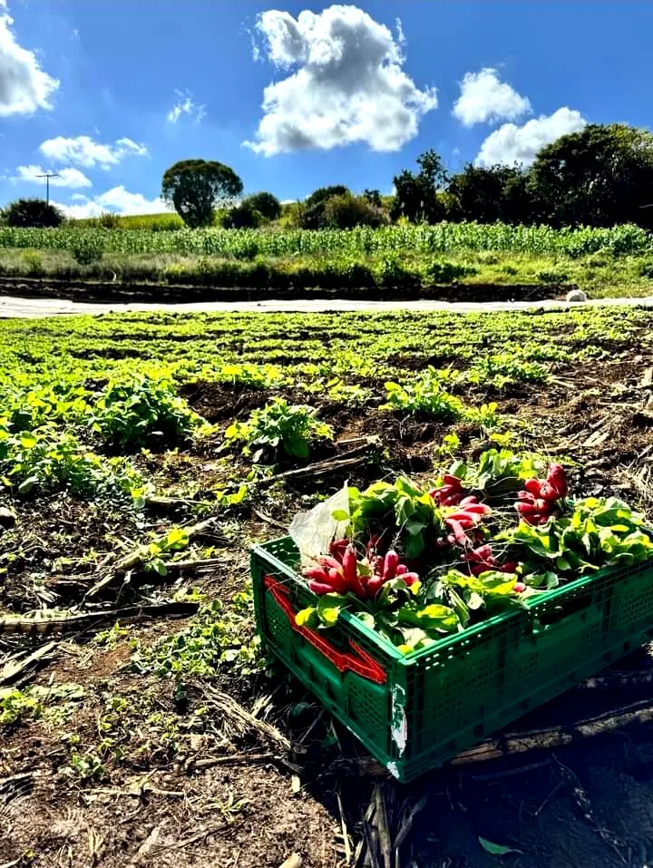
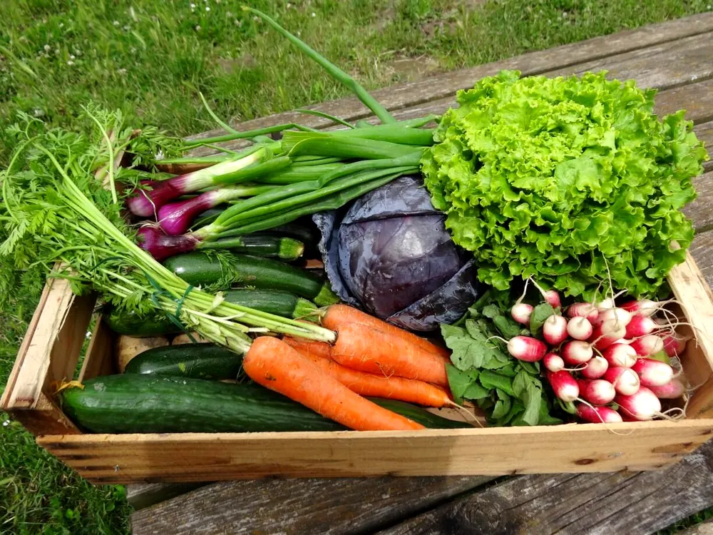

Fraises
À cueillir sur réservation
La famille Glamport vous ouvre son exploitation de l'ouest de l'île : maraîchage, arboriculture, visites, dégustation… et l'envie de partager sa passion pour l'agriculture.

« Une immersion unique dans une exploitation agricole de l'ouest de l'île. »
Pascal et Béatrice Glamport cultivent leurs légumes et leurs fruits chemin Villentroy, à Saint-Paul. Ils ont à cœur de partager leur passion : on vient y cueillir, goûter, apprendre le nom des plantes médicinales et repartir avec de bons produits péi.
Viv ansanm, manj péi !
Cultivé avec soin, récolté au fil des saisons. Dégustation gratuite à la ferme.
À cueillir sur réservation
Dont la patate douce blanche
Récoltés au jardin
Et bien d'autres légumes
« Cultivé avec soin dans notre jardin pour vous offrir le meilleur de la terre ! » Cari, rougail, daube, soupe, salade…
« Fraîche, locale & savoureuse ! » 100 % péi, 100 % bon, 100 % plaisir.
Prix repris des publications Facebook de juillet et août 2026, à titre d'exemple : demandez les produits du moment.

Seul, en famille ou en groupe, venez découvrir une exploitation agricole, ses activités et son environnement. La visite est encadrée par l'agriculteur.
« Vos enfants veulent mettre les mains dans la terre… mais pas dans le canapé toute la journée ? »
Les 7 et 8 août, de 8 h 30 à 17 h, les enfants de 6 à 13 ans étaient invités à passer la journée au jardin :
Petit-déjeuner, repas du midi et activités inclus, 10 places par journée. « Souvenirs garantis ! »
D'après l'affiche publiée sur Facebook en août 2026. Prochaines dates : à demander à la ferme.
« Un gâteau bien moelleux, fondant, qui sent bon la maison ! »
Le gâteau patate fait aussi partie de la collation de la visite. « Laissez tiédir… et régalez toute la famille ! »


Très bon souvenir du zarlor du 19 juillet chez Pascal et Béatrice, merveilleuse journée.Brigitte et Alain, commentaire Facebook, août 2026
Merci pour la recette Béatrice, le gâteau patate excellent.Brigitte, « les Lyonnais », commentaire Facebook, août 2026
Pour la table des fêtes ou pour faire plaisir : des produits péi cultivés avec amour, ou un moment à la ferme à partager en famille.
📍 178 bis chemin Villentroy, 97422 Saint-Paul
📱 0692 28 80 96 · appel, SMS ou WhatsApp
🎪 Au marché du Théâtre, Saint-Gilles-les-Bains
🏡 Adhérents du réseau Bienvenue à la ferme